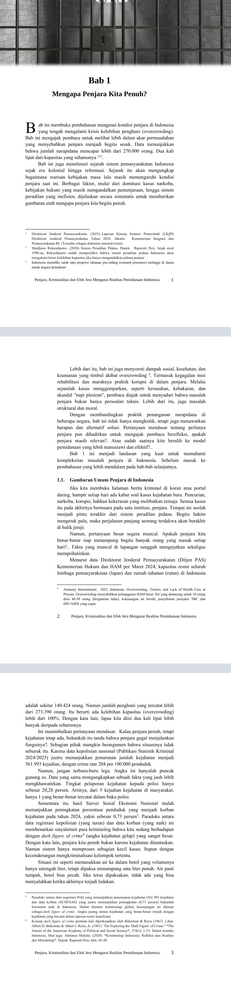
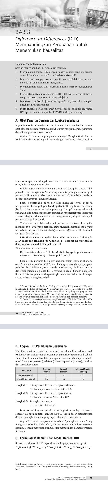
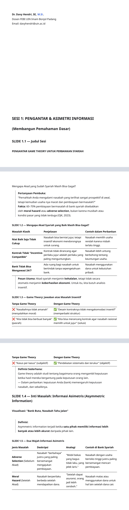

Cuplikan dari Naskah Buku dan Modul Asli
Bagian di bawah ditampilkan sebagai gambar halaman yang diambil langsung dari dokumen sumber, bukan ringkasan atau teks yang ditulis ulang. Hanya beberapa halaman pilihan yang ditampilkan untuk pengunjung publik.
Teori Permainan (Game Theory) — Bab 5: Keseimbangan Nash
Cuplikan halaman asli buku, halaman tercetak 57–59.

Cuplikan tiga halaman dari naskah asli buku Teori Permainan.
Penjara, Kriminalitas dan Efek Jera — Bab 1: Mengapa Penjara Kita Penuh?
Cuplikan halaman pembuka Bab 1, halaman tercetak 1–3.

Cuplikan tiga halaman pembuka Bab 1 dari naskah asli buku.
Ekonometrika Lanjutan — Bab 3: Difference-in-Differences
Cuplikan pembuka Bab 3, halaman tercetak 31–33.

Cuplikan tiga halaman pembuka Bab 3 dari naskah asli.
Menganalisis Kontrak Syariah dengan Game Theory — Sesi 1
Cuplikan modul asli: Pengantar dan Asimetri Informasi, slide 1.1–1.5.

Cuplikan materi sesi 1 dari modul pelatihan asli.